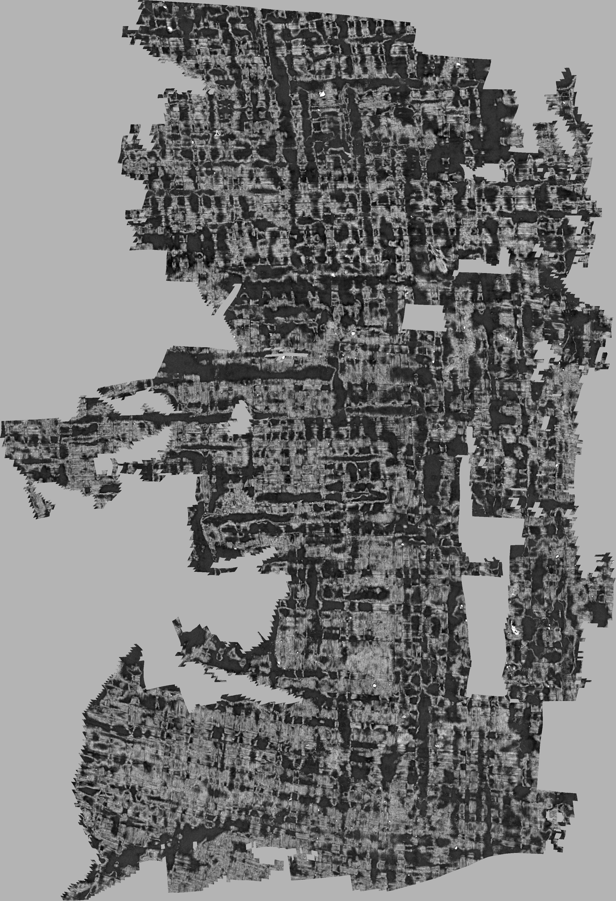
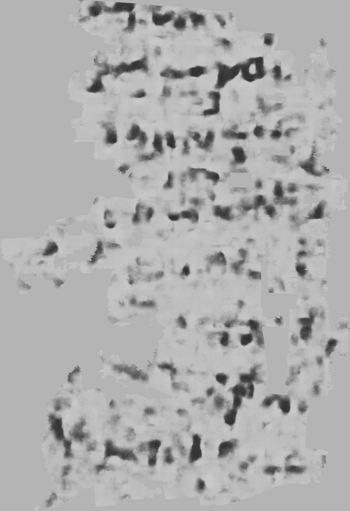
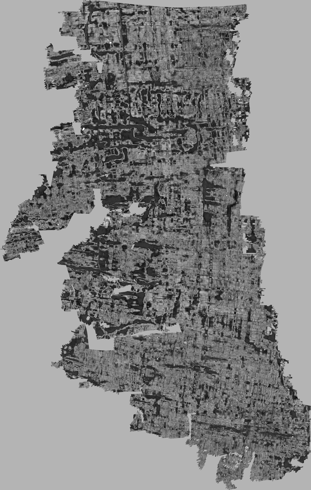
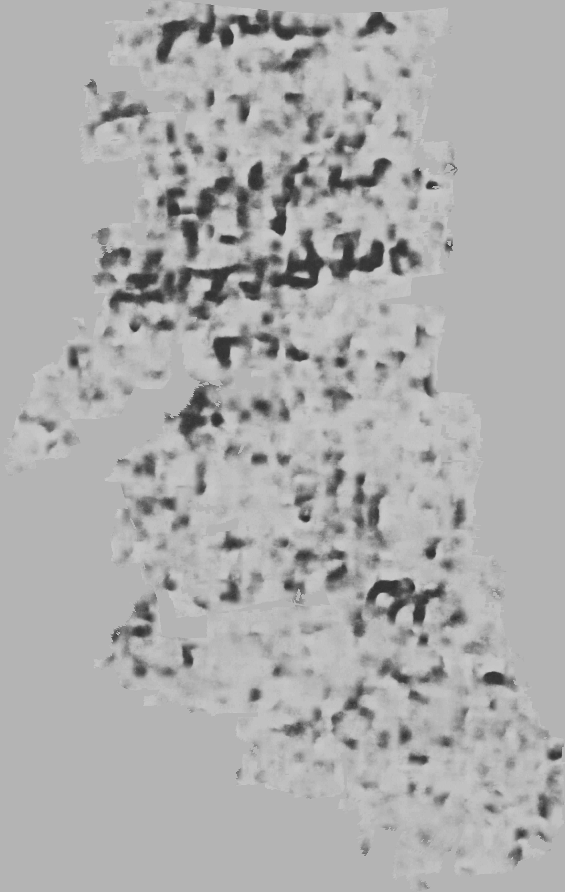

Technical report PDF: 5 main pages, 1 reference page, 9 Supplementary pages. Current revision checks · Original experimental audit · Measurements and provenance
Figure 1: two training stages · Figure 2: measured latent distances and automatic instances
Native large-region outputs from Kaggle-only 0058. Dark ink pixels indicate higher probability; gray denotes missing support. Known ink-training scroll. These images are not verified transcriptions.
| CT texture | Inward ink probability |
|---|---|
 |  |
| CT texture | Inward ink probability |
|---|---|
 |  |
Large-page surfaces and native ink tiles
Figure 3 binary slice · Figure 3 ignore cuts · Figure 7 enlarged slice · Native slice coordinates and provenance